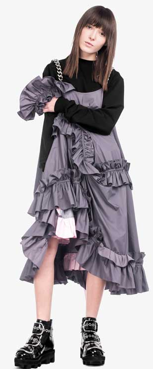

Q&A
ANNA K

Вспомни, как именно зародилась идея заняться дизайном одежды?
В 6 лет мама привела меня в художественную школу, и уже там я осознала, что стану дизайнером. После выпуска я все так же хотела создавать вещи, но не понимала, как это сделать. Мне очень помог опыт работы моделью: на съемках лукбуков и фешн-стори я познакомилась со многими дизайнерами, поняла, как устроен показ, и в 16 лет решилась на собственную коллекцию. Показ прошел на маленьком подиуме MBRFD, мою работу похвалила Елена Бара, и тогда я очень четко поняла - это мой путь.
Как изменилась твоя героиня за время существования бренда?
Героиня Anna K растет вместе со мной, сейчас ей 20 лет. Моя самая любимая первая коллекция была очень простой: она состояла из шелковых платьев холодных тонов. Их могла бы носить нежная, аккуратная и все же немного с хулиганским характером девушка. Теперь она немного выросла, стала более элегантной (даже Крис Дженнер выбрала платье с жемчугом Anna K для выхода в свет!). Но ДНК бренда - банты, трапециевидные формы, шелк, хлопок - присутствует в каждой коллекции.
Какая общая черта характерна для всех твоих коллекций?
Силуэт трапеция и банты. Я люблю форму банта и сами банты.
Продолжи фразу: в вещах Anna K лучше всего…
Фотографироваться или идти на вечеринку, позировать стритстайл-фотографам. Словом, быть в центре внимания.
ДНК бренда - банты, трапециевидные формы,
шелк, хлопок - присутствует в каждой коллекции.
Как соблюдать баланс между коммерцией и творчеством?
Каждый сезон я спрашиваю себя, что такое коммерция? Anna K, все таки, очень яркий и открытый бренд, как, например MSMG. В моих коллекцциях много запоминающихся вещей, но для повседневной жизни люди зачастую выбирают что-то спокойное. Создать комфортную вещь на каждый день очень сложно, но я каждый сезон подвожу себя к мысли начать работать с черным - первым делом хочу выпустить классную черную водолазку “в рубчик”. Но в основном желание творить превышает заботу о комфорте, для меня главное, чтобы вещь получилась интересной и красивой. В этом сезоне я очень постаралась и сделала свою первую коллекцию pre-fall в темных оттенках. Кажется, это будет самая коммерческая коллекция в истории бренда Anna K.
Три слова, которые характеризуют твою последнюю коллекцию.
Зефир - потому что она очень яркая и воздушная. А еще радость и решительность - нужно быть очень классной, чтобы ее носить.
Назови свои главные источники вдохновения.
Меня может вдохновить все, что угодно, даже простая беседа. Хорошее самочувствие и комфортная обстановка - вот и все, что мне нужно, чтобы начать рисовать. Комфортней всего мне в путешествиях и на неделях моды. А развить идею я могу из самой маленькой детали: например, когда у меня только появилась машина, я придумала серию принтов с дорожными знаками. В итоге они стали основной темой коллекции. В общем, все происходит спонтанно, но я никогда не сижу и специально не жду вдохновения.
Коллекция Anna K...
Платье
30000 грн
Платье
20000 грн
Платье
31000 грн
Платье
20000 грн
Куртка
35000 грн
Платье
30000 грн
Платье
20000 грн
Платье
31000 грн
Платье
20000 грн
Куртка
35000 грн